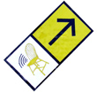
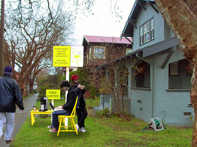

|
 When a local household in San Jose decides its share its wireless network with neighbours and other strangers, the house members do not know what to expect. Few curious passersby stop by to see what would happen next. There is a rumour that somewhere else, at the other end of town, another household with a yellow chair is doing the same thing. What was going on? The rumour mill worked overtime, as people wondered why anyone would want to sit on a yellow chair to access a wireless network. But for those who sat on the chair, they knew it was a unique experience and a lot of fun. They had been ‘invited’ to enter personal networks, share music and movies and shout across town about war and politics if they so wished. They felt like cyber voyeurs, entering unknown territories, grabbing and dropping files across the neighbourhood, across the city, over a cup of coffee.
In contemporary urban conditions where wireless networks constantly bleed and interfere, where hackers and copyright lawyers work overtime at two ends of technology, how does an individual’s openness and desire to ‘invite’ strangers into his private virtual world create new social spaces in the public domain? How does this alter notions of private/public and build communities of presence in the city? “My WiFi network is open for neighbours and passers-by. Free access from the yellow chair.” Few months ago, Anab placed this sign along with a yellow chair, outside her home in London and attempted to extend the boundaries of her home to encompass those of her wireless network. People sitting on the chair could also access the shared folder on her computer with new and enticing offers or services everyday.
‘Yellow Chair Stories’ was a live social intervention, which created a new kind of ‘physical blog space’ and lead to some extremely engaging encounters and conversations between strangers through a ‘bleeding wireless network’. Anab’s proposal to take the project further into the broader context of urban city life received the UNESCO DIGITAL ARTS AWARD 2005 (3rd prize out of 242 entries) under the theme “City and Creative Media”.

For ISEA 2006, Anab Jain and Tom Jenkins collaborate to propose Yellow Chair San Jose, developing the ’Yellow Chair Stories’ project further in the context of the hub of technology and commerce - San Jose. Using several communication strategies well before the conference, they will work with two local households from different neighbourhoods in San Jose to extend their wireless internet connection beyond the confines of their home to the public space outside.
The two chairs will sit in the path of directional antennas, creating a spatial, visible area of connection. These two nodes will also be able to communicate with each other through a central server and exchange files, conversations and services. Thus the person sitting on the chair will access the world wide web as well as the yellow chair network. This re-appropriation of existing technology will create new channels of day-to-day contact for people in the city, and might lead to a more significant socio-political debate depending on the location of the family in the city. Watermans gallery London is supporting Yellow Chair San Jose. Yellow Chair Stories - complete video
http://www.anab.in/yeartwo/yellowchair/yellow.htm
|